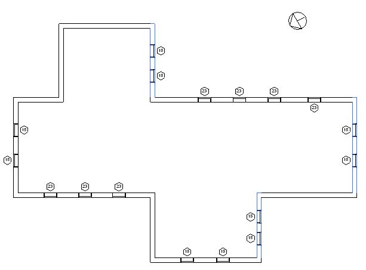
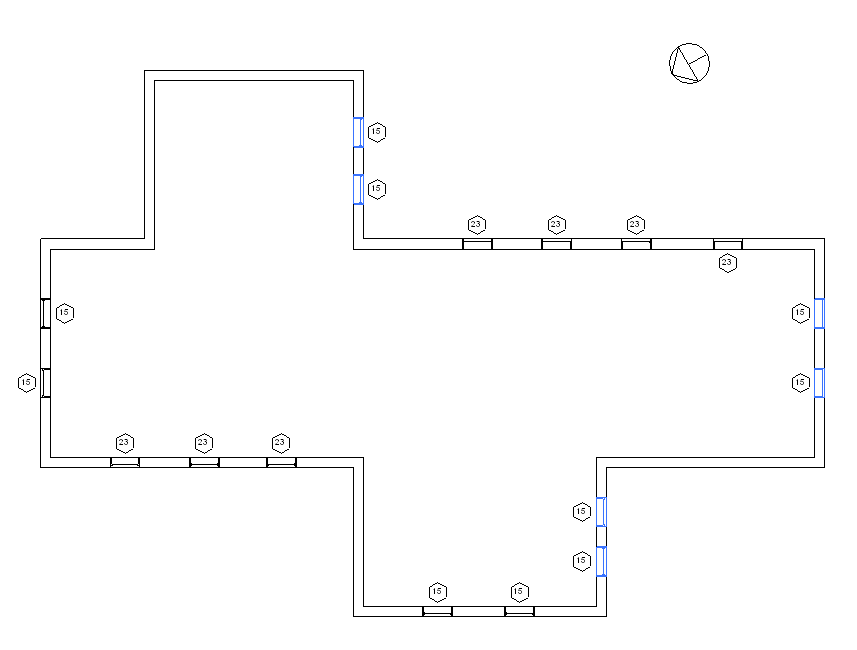

Project Location
This is part 8 of Scott Conover's AU 2009 class on analysing building geometry, dealing with the project location and its effect on element transformations. We aready looked at the project location in the discussion on unrotate north. However, as Scott pointed out, the results presented there are somewhat misleading and are subsumed by the following discussion. The project location obviously also affects the azimuth of an element, i.e. the angle between the element and true north, and our previous discussion on that topic can also be replaced by this post.
Project location coordinates
Revit projects have another default coordinate system to take into account: the project location. The Document.ActiveProjectLocation provides access to the active ProjectPosition object, which contains:
You can use these properties to construct a transform between the default Revit coordinates and the actual coordinates in the project:
// Obtain a rotation transform for the angle about true north Transform rotationTransform = Transform.get_Rotation( XYZ.Zero, XYZ.BasisZ, project_north_angle ); // Obtain a translation vector for the offsets XYZ translationVector = new XYZ( projectPosition.EastWest, projectPosition.NorthSouth, projectPosition.Elevation ); Transform translationTransform = Transform.get_Translation( translationVector ); // Combine the transforms into one. Transform finalTransform = translationTransform.Multiply( rotationTransform );
South Facing Elements Using Project Location
In this example we adapt the south-facing walls and south-facing windows examples to deal with a project where true north is not aligned with the Revit coordinate system. The facing vectors are rotated by the angle from true north before the calculation is run, and the following walls are now determined to be south facing:

The following windows are now facing south:

Here is the method TransformByProjectLocation that we use to transform a direction vector by the rotation angle of the ActiveProjectLocation. It takes a given normalized direction as an input argument and returns the transformed location:
protected XYZ TransformByProjectLocation( XYZ direction ) { // Obtain the active project location's position. ProjectPosition position = Document.ActiveProjectLocation.get_ProjectPosition( XYZ.Zero ); // Construct a rotation transform from the position angle. Transform transform = Transform.get_Rotation( XYZ.Zero, XYZ.BasisZ, position.Angle ); // Rotate the input direction by the transform XYZ rotatedDirection = transform.OfVector( direction ); return rotatedDirection; }
Please refer to Scott's AU class material for the full source code of his sample project.
We will continue this series with a look at the powerful FindReferencesByDirection method coming up next.